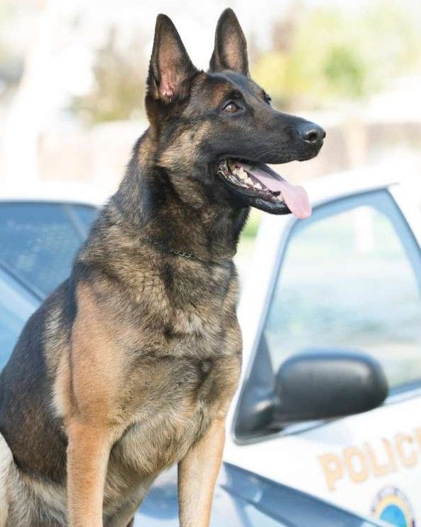
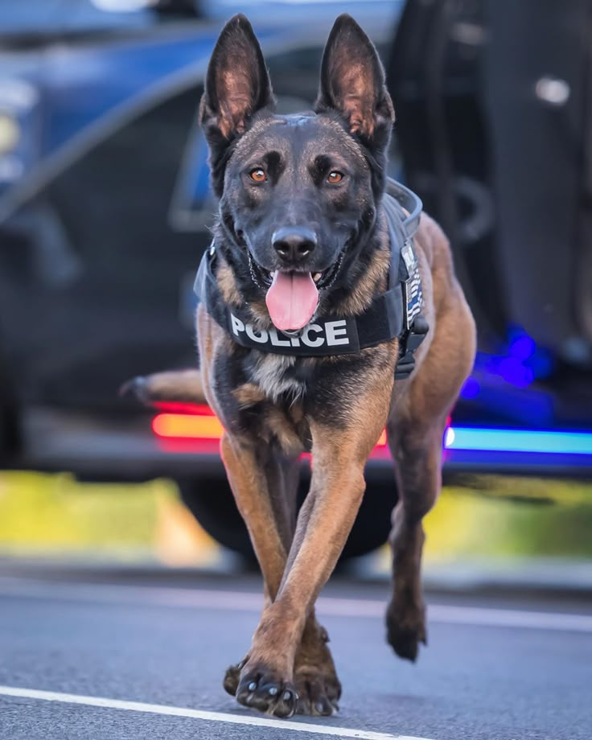
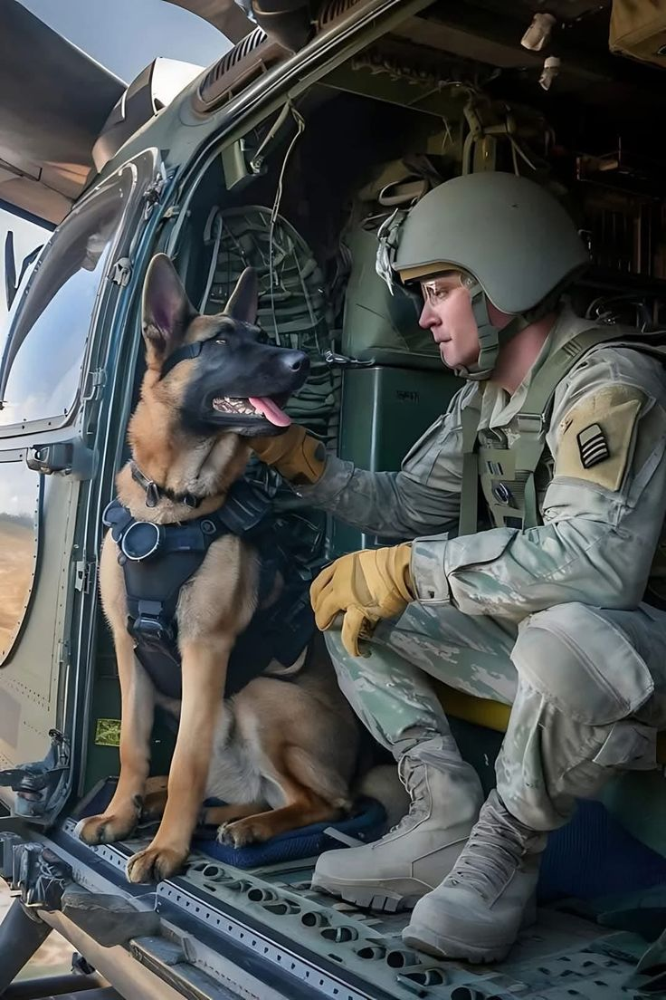

BEST SECURITY DOGS [NONI ELITE]
.jpeg)
Police dogs are one of the best security dogs world wide, they are known for their agility and courage to defend and protect their owners they are humble and very trainable, they are naturally brilliant that makes them take good decision when defending their territory. Police dogs are very easy to train and very smart to take actions when facing danger,their ability to raise alarm and to let their owners know that there is danger is topnotch. the sweetest part in police dogs is that they are cost free in the aspect of feeding, they can eat things cooked by the owners
The history of the police dog, or K-9 unit, traces back to the formal introduction of organized police dog services in Ghent, Belgium, in 1899, following earlier informal uses in Europe and England. This European innovation quickly spread, particularly to Germany, which developed scientific approaches to dog breeding and training, establishing the first dog training school in 1920 and solidifying the German Shepherd as an ideal police breed. K-9 work evolved to include specialized tasks like drug and bomb detection, tracking, and locating missing persons, becoming a widespread and invaluable component of modern law enforcement.
REASONS WHY WE NEED TO BUY SECURITY POLICE DOG
Police dogs are frequently used to track missing people in search-and-rescue missions. Once a dog is given a piece of an item with the scent of a specific person, they can lead the police down the path that person took. This is also useful when tracking down suspects or escaped convicts. Police dogs can quickly lead teams down the right way. During a pursuit or search and rescue mission, every minute counts, so having this extra knowledge is invaluable.
.jpeg)
At the end of the day, when it’s needed, a police dog can and will attack a suspect. This can be incredibly beneficial when detaining an individual or protecting an officer. However, this is usually a very small portion of a K9s overall role. An apprehension bite is the last resort when it comes to an arrest or a confrontation.
CONCLUSION
Police dogs are invaluable, highly trained law enforcement partners used for diverse tasks like tracking, apprehending suspects, locating evidence, and patrolling, and require significant time, patience, consistency, and specialized training from their handlers. Effective police work also necessitates a good partnership between the handler and the dog, and in some regions, there are increasing efforts to provide support and care for retired police dogs and their handlers to alleviate the financial burden of their veterinary care